2. 이미지·영상장비의 종류와 특징
촬영 목적과 마케팅 예산에 최적화된 하드웨어 촬영, 조명, 수음 장비들을 비교 분석합니다.
촬영 장비
카메라 및 녹화 장비
- 스마트폰: 뛰어난 휴대성과 자동 보정 기능, 숏폼 콘텐츠에 최적.
- 미러리스: 대형 센서로 고화질 구현 및 아웃포커싱, 브랜딩 영상용.
- 웹캠/액션캠: 라이브 방송이나 실외 역동적 활동 촬영에 특화.
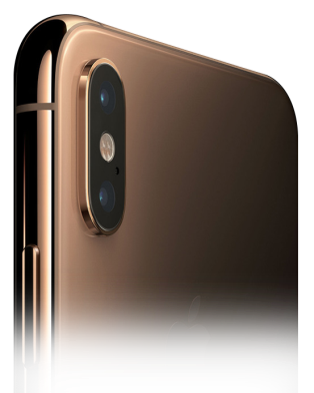
스마트폰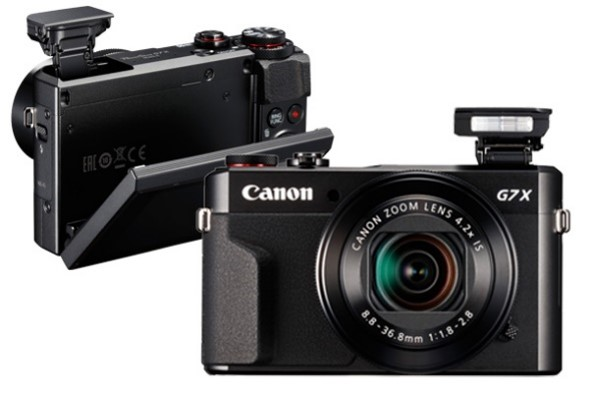
미러리스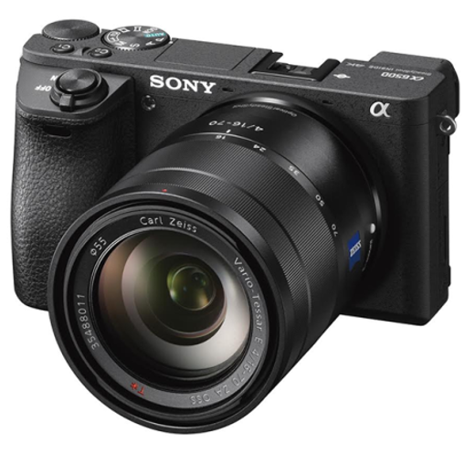
DSLR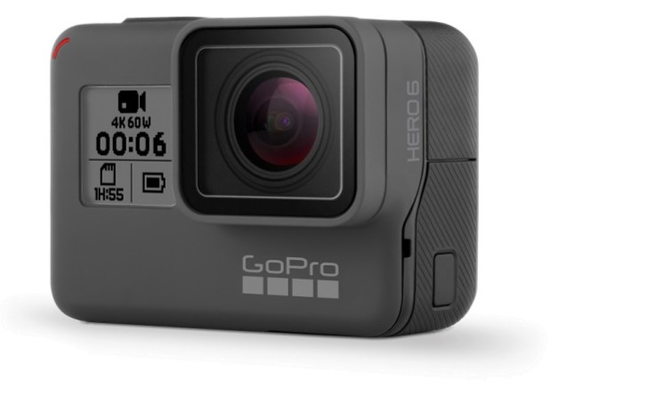
액션캠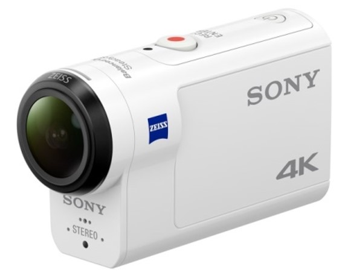
핸디캠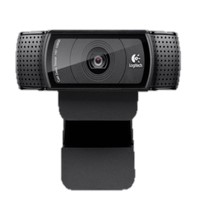
웹캠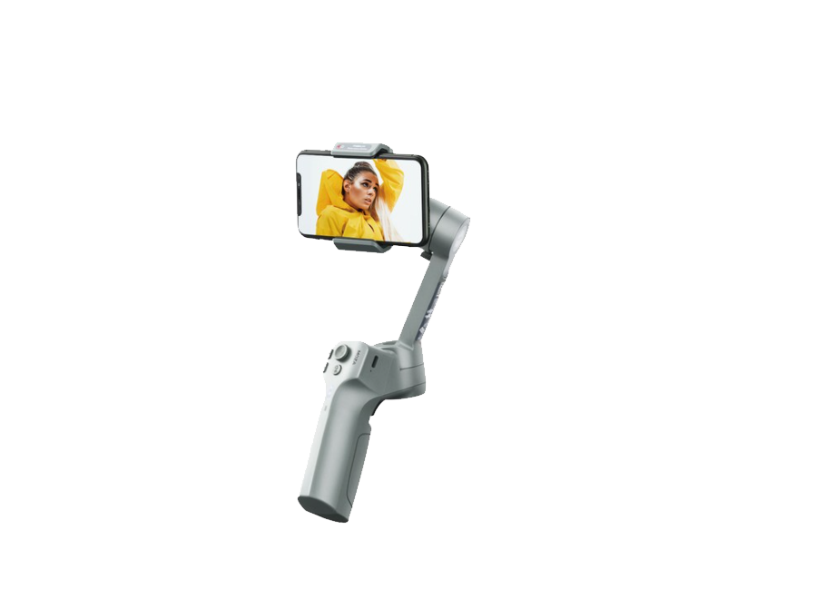
짐벌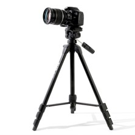
삼각대 조명 장비
지속광 및 보조 조명
- LED 패널 라이트: 광량이 일정하고 색온도 조절이 쉬워 실내 기본 탑재.
- 소프트박스: 빛을 부드럽게 퍼뜨려 인물 피부 톤을 깨끗하게 연출.
- 링라이트: 인물 뷰티, 리뷰 영상에서 눈동자 캐치라이트 생성 및 섀도우 제거.
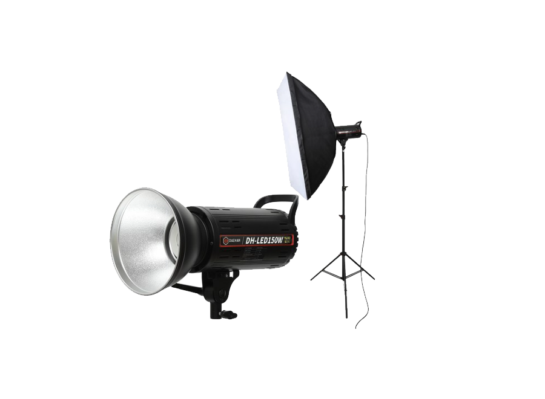
지속광 LED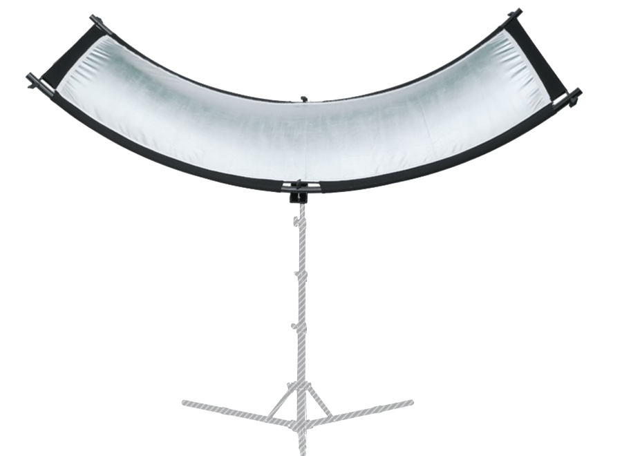
빛 반사판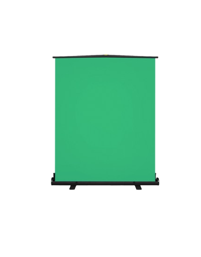
크로마키 음향 장비
마이크 및 수음 장비
- 핀마이크 (Lavalier): 1인 토크 및 인터뷰 시 목소리를 또렷하게 수음.
- 샷건 마이크 (Shotgun): 특정 방향의 소리를 지향 수집, 카메라 장착용.
- 콘덴서 마이크: 실내 내레이션/더빙, ASMR 등 스튜디오 녹음에 탁월.
 콘덴서 마이크
콘덴서 마이크
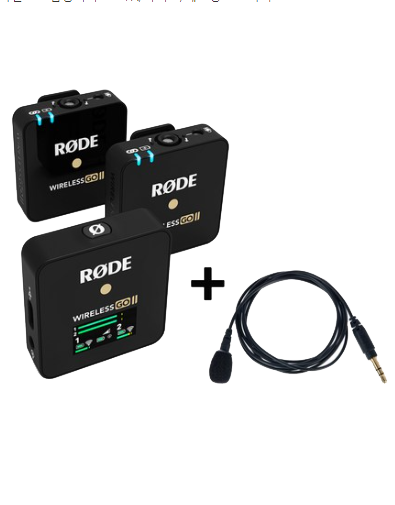
핀 마이크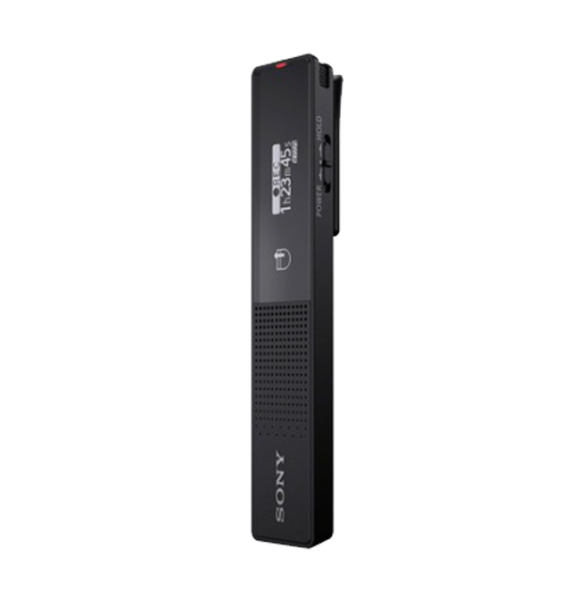
녹음기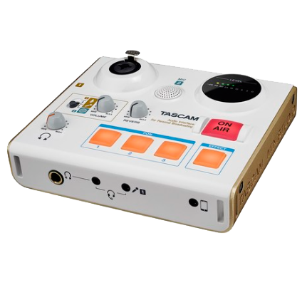
오인페 쇼크 마운트
쇼크 마운트
2. 이미지·영상장비의 종류와 특징
영상 화질의 90%는 조명이 결정합니다. 스튜디오 기본 배치인 3점 조명 규칙을 학습합니다.
3점 조명 설정법 (Three-Point Lighting Guide)
1. 주광 (Key Light)
피사체의 사선 45도 앞쪽에 배치하여 주 광원을 확보합니다. 피사체의 전체적인 형태와 성격을 결정합니다.
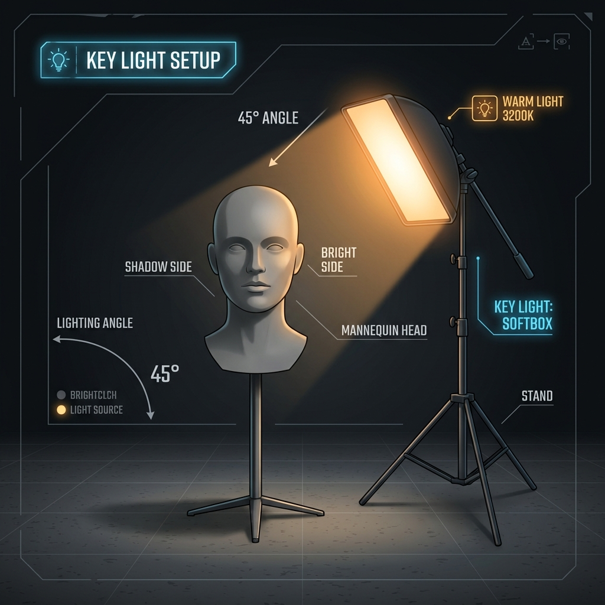
2. 보조광 (Fill Light)
주광의 반대편 45도에 배치하며, 주광보다 50% 약하게 설정하여 생긴 짙은 그림자를 부드럽게 메워줍니다.
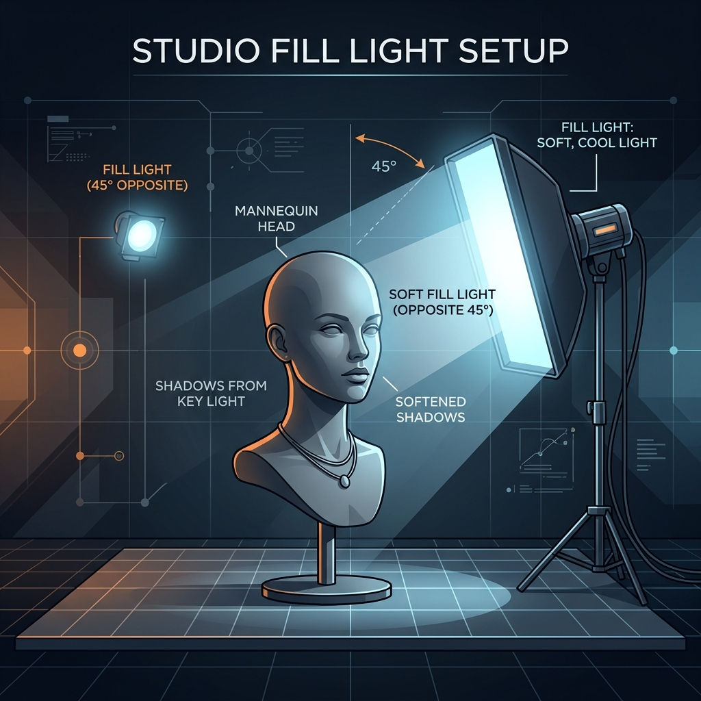
3. 역광 (Back Light / Hair Light)
피사체의 뒤쪽 높은 곳에 배치하여 피사체와 배경을 분리시켜 3차원적인 입체감을 극대화합니다.
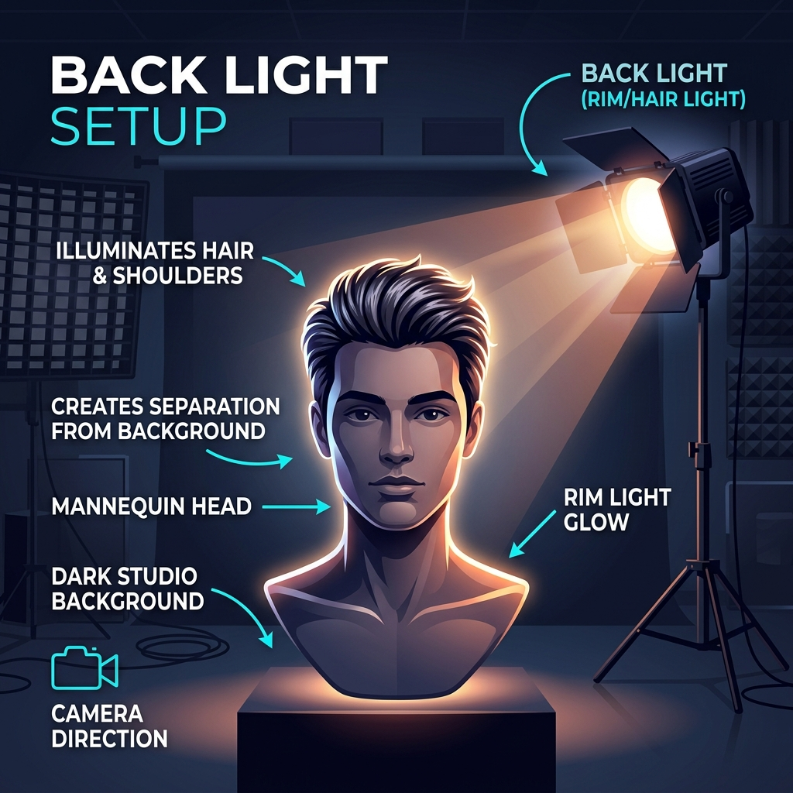